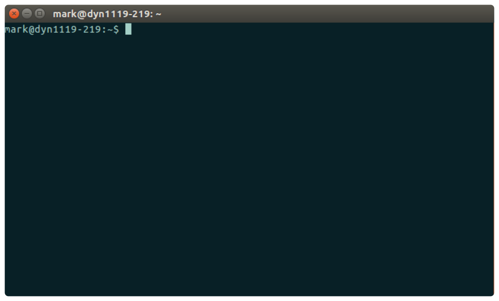

3  Introduction to UNIX
Introduction to UNIX
You actually need to know very little about UNIX to run a simple analysis - only how to open a terminal and run 3 basic commands. This section will run through these basics, if you want a more in-depth introduction see the section on shell scripting.
3.1 The Terminal
The terminal (AKA console or shell) is an environment where you can type commands that will be interpreted and run by your system. The terminal is on all unix systems by default so just search for ‘Terminal’ in your applications to open it. It should look something like this: 
The text (usually your username and current directory) followed by a dollar symbol $ is called the prompt. The prompt starts each command line and indicates your terminal is ready to accept a command - if it’s not showing up it probably means your system is still processing the previous command.
To run a process you simply type the command and press enter. Previous commands are stored and can be retrieved with the arrow buttons.
3.2 WARNING
The console provides very few warnings or failsafes - and it’s very easy to permanently delete or overwrite important files. Always double check what you type at the command line.
3.3 The filesystem
Files are stored on unix in a tree-like structure of directories/folders, as diagrammed below:
The base of this tree is the root directory - represented by a forward slash /. The root directory contains all other directories and files.
Each user has by default a personal directory created with their username in the home directory. For example my home directory in the above example is /home/mark. All personal files should be stored within your home directory, and you should avoid making changes to files in the root directory unless you really know what you’re doing.
The location of any file is called it’s path and can be given by a series of directory names and seperated by forward slashes. e.g. the path of the file moo.txt in the filesystem diagrammed above would be /home/mark/Documents/moo.txt.
An absolute path gives the full path from the root directory, while a relative path gives the path relative to the current directory.
3.5 Head & Tail
Often the files involved in bioinformatics store large amounts of data and opening them in a text editor would take too much memory. A command that comes in very handy is head - which will print just the first 10 lines of a file to the terminal. e.g. to print the first 10 lines of moo.txt:
head moo.txttail behaves the same but prints the last ten lines.
3.6 Arguments
The behaviour of commands and programs can often be changed with options or arguments. These are commonly added to the command as a hyphen followed by a letter. e.g. you can modify the head command to print 20 lines in stead of the default 10 by providing the -n argument:
head -n 20 moo.txtArguments are unique to each program/command and you’ll need to read the documentation for each command to find out what options are available. Many built-in commands have manual pages available on your system that provide probably way more information that you’re interested in, these can be accessed with the man command. e.g. to see the manual for ls, type:
man ls(Press spacebar to go to the next page of the manual or q to quit).
3.7 Input/Output
The final concept you need to be familiar with to get on your feet is directing data input and output. Programs generally require some form of input and produce some form of output. Some programs might create a new file and send all output data to that file, however many programs directly send their output to the terminal. For example the ls,head and tail commands above all print their output to the terminal.
In some cases you might prefer to save the output rather than print it, for this you can use i/o redirection. There are 3 basic operators:
- > = redirect output to a file
- < = take input from a file
- >> = append output to a file
So for example to create a new file called quack.txt with just the first 2 lines from moo.txt you could type:
head -n 2 moo.txt > quack.txtNote: if the output file had already existed all it’s contents would have been wiped and replaced with the new lines. If you just want to add to an existing file use >>.
3.8 Summary
That’s it! With these three simple commands you can run basic analyses at the command line. Of course for anyone looking to get more into bioinformatics three commands aren’t going to get you very far, see the section on shell scripting for a slightly more in depth tutorial.